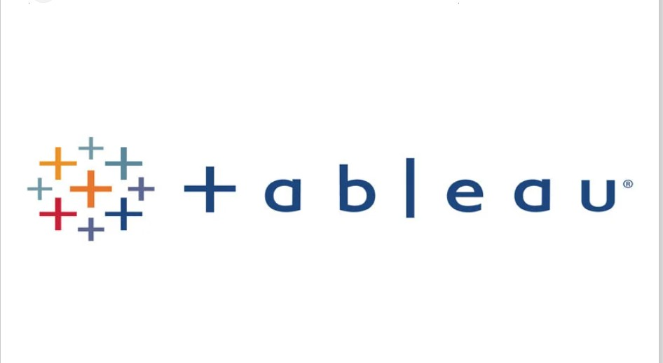

This project involves using SQL to clean and preprocess raw data by completing all Data analysis steps,
followed by performing Exploratory data analysis
to uncover patterns, trends, and insights through descriptive statistics and visualizations.
This project employs R programming to systematically perform data analysis process with
"OSEMN" (Obtain,Scrub,Explore,Model,iNterpret) framework

This folder contains a series of Tableau projects showcasing various data visualization and analysis techniques,
including interactive dashboards, trend analysis and performance tracking, all designed
to facilitate data-driven insights and decision-making.
This folder houses a collection of Excel projects demonstrating advanced data analysis,
data modeling, data visualization, and automation techniques, providing valuable insights
and streamlined workflows for business decision-making.